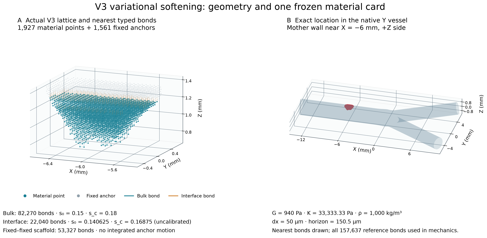
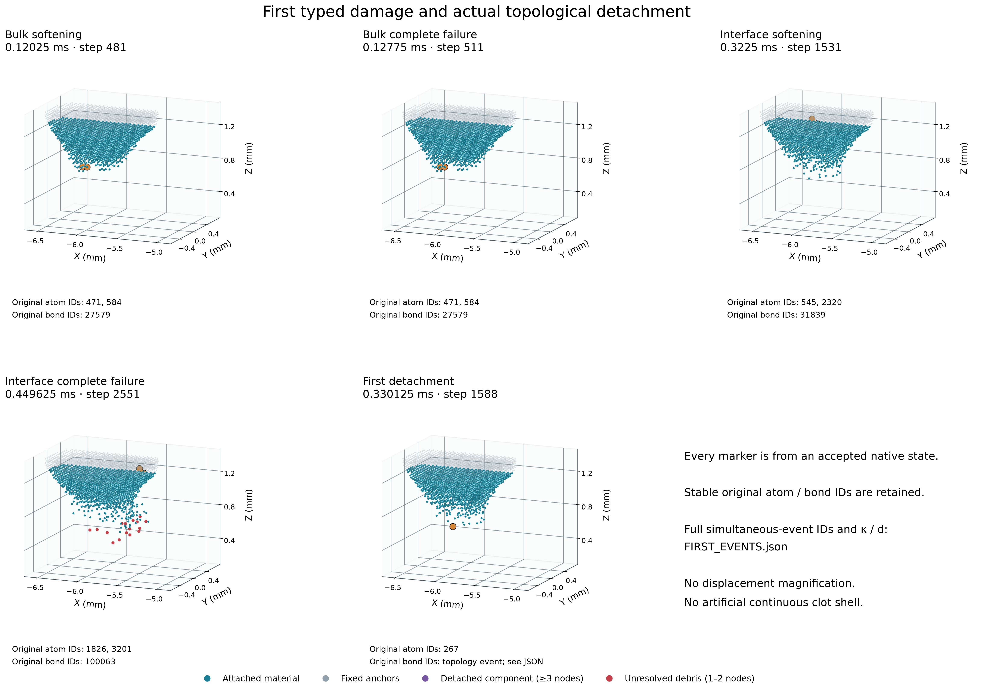
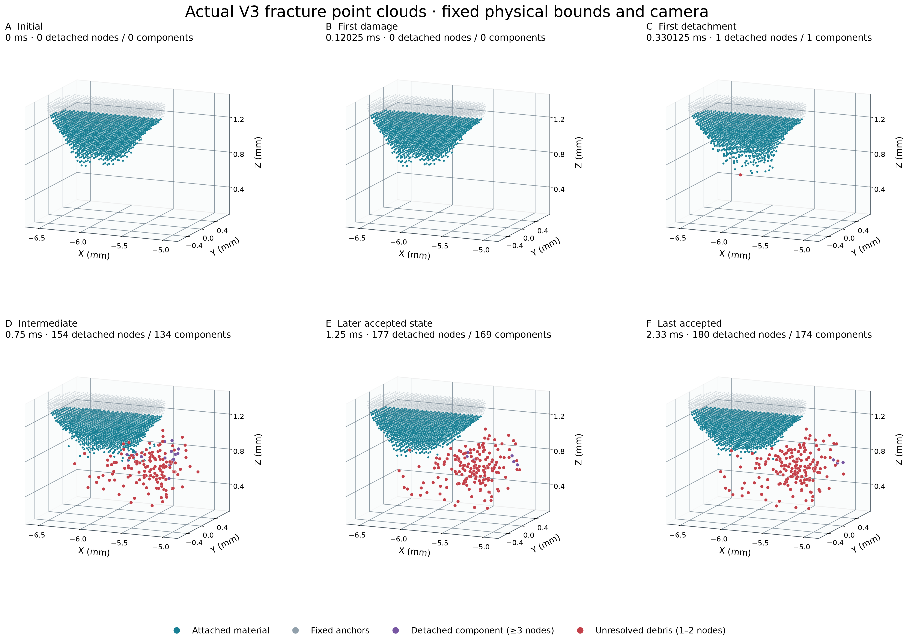
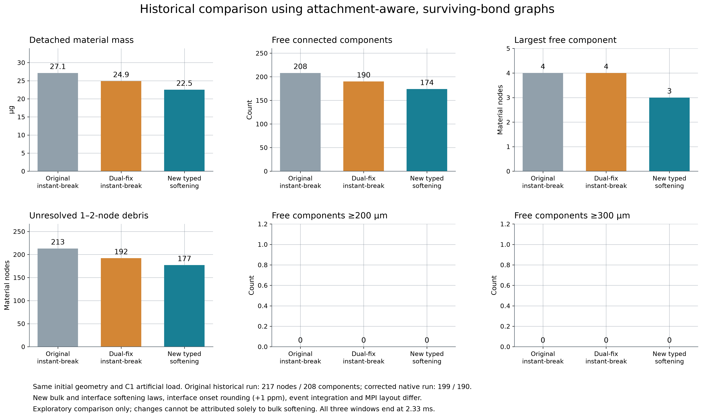
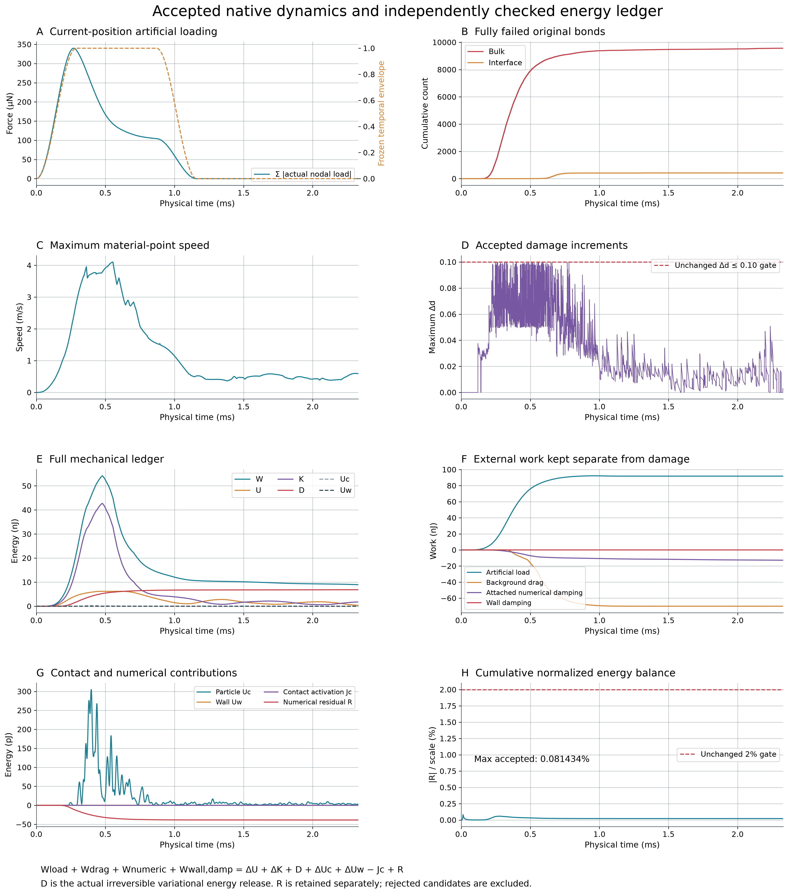
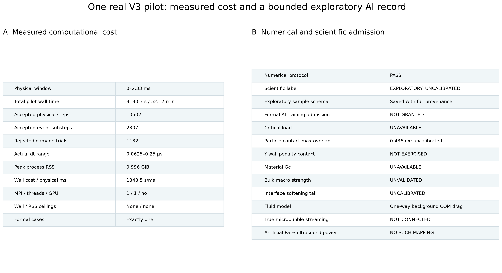

20261014T232612Z · FULL_PROTOCOL_NUMERICAL_PASS · EXPLORATORY_UNCALIBRATED
实际到 2.33 ms，脱离 180 个材料点、174 个游离分量。等效直径≥200µm分量 0。1–2点碎屑不能称为临床微栓子。

真实1927材料点、1561锚点、157637原始键和原始Y形壁面三角网格。左图只显示最近邻本体/界面线段以便看清，力学与图连通性始终使用全部参考键；未改变几何。界面sc=0.16875为明确未标定工程假设。
SVG · PNG
五类首次事件采用该接受步FP64节点及κ/d全态；标注原始atom/bond ID。不存在的事件明确写未观察到，拓扑脱离不是某一条任意键的失效替代。完整同时事件ID在FIRST_EVENTS.json。
SVG · PNG
各帧使用同一真实物理坐标、正交相机及轴比例，显示全部3488节点，不放大位移，不绘连续医学外壳。附着/游离分类用全部d<1原始键与固定锚点连接关系；1–2点为未解析数值碎屑，非临床微栓子。
SVG · PNG
只读复用旧217/208及双Bug修正199/190两套结果，未重跑旧模型。比较脱离质量、图分量、最大节点数、未解析碎屑及200/300µm阈值。等效直径由N dx³定义；旧新损伤律、界面onset约1ppm、dt及MPI不同，因此不作单一机制定量归因。
SVG · PNG
实际外力按当前坐标计算且按历史时程卸载；真实物理ms。绘接受态的本体/界面完全失效、速度、Δd和完整W/U/K/D/接触/R；背景阻力、附着数值阻尼、壁面阻尼功单列，绝不混入材料D。R使用冻结动态能量尺度；拒绝候选不进入合法曲线。
SVG · PNG
统计包括原生计算、独立力/能量检查、回滚及检查点的正式pilot墙钟，单进程RSS实测。未启用固定RSS/墙钟上限；原输出和数值门槛保留。成功数值窗口不等于材料Gc、宏观强度、界面尾部或临界载荷认证。仅一个可追溯探索样本，不能直接形成正式AI训练集。
SVG · PNG